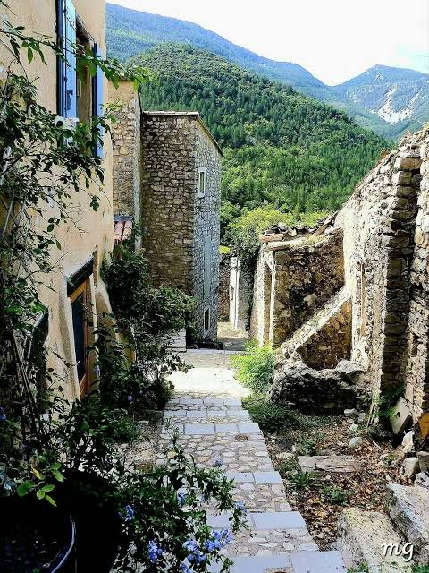
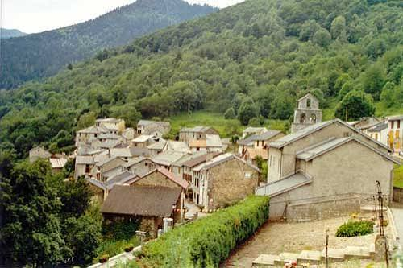

Lercoul
le village qui refuse
de disparaître


⟹ Histoire de clocher ⟸
À 1 150 mètres d'altitude, à moins de 15 kilomètres d'Andorre à vol d'oiseau, Lercoul est la commune la moins peuplée de l'Ariège. Elle a compté plus de 300 habitants, puis cinq. Elle n'a pourtant jamais fermé sa mairie.
Lercoul s'étage sur un versant de la haute vallée du Vicdessos, au-dessus de la vallée de Siguer, dans le parc naturel régional des Pyrénées ariégeoises. Le territoire de la commune, 19 km², monte de 826 mètres jusqu'à 2 876 mètres au pic de Tristagne, sur la frontière andorrane. Le port de l'Albeille, à 2 601 mètres, mène à pied jusqu'à Ordino, en Andorre.

L'occupation est très ancienne : des fouilles ont mis au jour des charbonnières et des traces de métallurgie du IIIe siècle, et une charbonnière du VIe siècle. Le premier texte connu date de 1182 et nomme le village « Erlicol ». Il dépend alors de la seigneurie de Quié. En 1335, le comte de Foix le cède à Raimon de Vonc, seigneur de Junac. En 1390, on y compte 14 feux, c'est-à-dire 14 foyers.
La richesse de Lercoul, c'est la mine de fer de Rancié, à quelques centaines de mètres du village, entre Lercoul et Sem. Exploitée depuis au moins le IIIe siècle, peut-être dès l'époque gauloise, elle est considérée comme la plus importante exploitation minière des Pyrénées françaises. Son minerai alimente une cinquantaine de forges dans le Couserans et le pays de Sault.
Les hommes de Lercoul sont mineurs, ardoisiers dans les carrières voisines de Siguer, charbonniers, éleveurs. On cultive pour se nourrir, et l'on commerce par le port de Siguer. Pendant la Révolution, en 1793, le hameau, jusque-là rattaché à la paroisse de Siguer, devient une commune à part entière. Elle atteint son maximum en 1836 : 329 habitants. En 1876, ils sont encore 315.
À partir de 1890, la production de Rancié décline. En 1929, après un accident qui rend les réparations trop coûteuses, la mine ferme définitivement. Les ardoisières retardent le départ des familles, mais ne l'empêchent pas. Au début du XXe siècle, les activités s'éteignent les unes après les autres. Depuis la fin des années 1960, aucun agriculteur ne vit plus sur la commune.
En 1968, Lercoul ne compte plus que 8 habitants. En 1975, ils ne sont plus que cinq.
329 habitants en 1836, 5 en 1975. Mais une mairie, une fontaine, une église et un monument aux morts : Lercoul est resté une commune.

Lercoul aurait pu être rattaché à une commune voisine, comme tant d'autres villages vidés. Il ne l'a pas été. La commune a gardé sa mairie, son conseil municipal, son budget et ses biens : les estives communales sont louées à un éleveur qui y fait paître vaches et brebis tarasconnaises, et un apiculteur y installe ses ruches.
Peu à peu, des retraités et quelques actifs en quête de calme se sont installés. La population est remontée à 19 en 1982, puis à 30 en 2007, avant de redescendre : 11 habitants au recensement de 2023, dont seulement quelques-uns vivent là toute l'année. Chaque premier dimanche d'août, la fête du village réunit pendant trois jours ceux qui y sont attachés. L'été, un concours de peinture en plein air se tient sur la place.
Une commune n'est pas seulement un village : c'est une collectivité, avec un conseil municipal élu, un budget et des biens. À Lercoul, ces biens sont surtout des montagnes. La location des estives communales à un éleveur fait vivre le budget, et entretient les paysages.
Garder sa mairie, c'est garder la maîtrise de son territoire : décider de ce qu'on fait des pâturages, des chemins, de la fontaine, de l'église. C'est aussi garder une voix. Dans une vallée qui s'est vidée de ses mineurs, Lercoul a fait le choix de rester lui-même.
L'église Saint-Martin abrite un retable dont la représentation du saint est réputée très inhabituelle. Elle vaut le détour pour qui passe par le GR 10.
Les montagnes de Lercoul abritent isards, vautours et aigles royaux. Le bouquetin ibérique, disparu des Pyrénées, y a été réintroduit en 2014.
Le port de l'Albeille, à 2 601 mètres, permet de passer à pied de Lercoul à Ordino, en Andorre. Les lacs d'Izourt et de Gnioure sont aussi tout proches.
Lors des Journées européennes du patrimoine, une visite guidée suit l'ancien chemin muletier de la mine de Rancié, au départ de Sem.